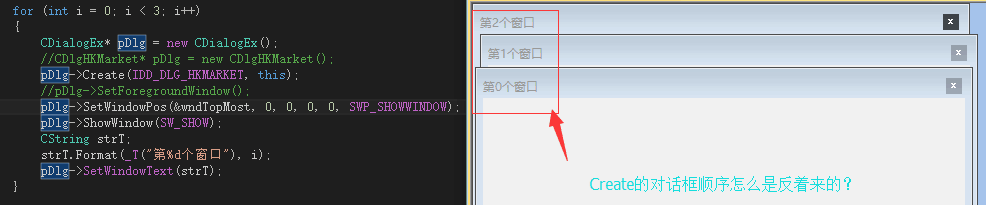
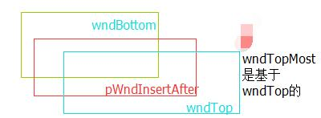

首先遇到的情况，直接看图

看到这现象有点怀疑人生，Windows默认Create顺序是按照Z序依次递增的，然而为何会出现如此现象？
首先和窗口类型确实有关：用的是Child，如果使用popup/overlapped都正常，我们通常非模态对话框用overlapped最多，这次要做子窗口管理，才发现有如此问题。考虑在窗口类型上选择：层叠/弹出/子窗口。选择Child类型是必须的（根据需求）。于是想办法改变窗口Z序，windowsZ序说明并不多，看来也是不复杂的原因，搜索相关函数
BOOL SetWindowPos( const CWnd* pWndInsertAfter, int x, int y, int cx, int cy, UINT nFlags );
pWndInsertAfter
Identifies the CWnd object that will precede (be higher than) this CWnd object in the Z-order. This parameter can be a pointer to a CWnd or a Pointer to one of the following values:
wndBottom Places the window at the bottom of the Z-order. If this CWnd is a topmost window, the window loses its topmost status; the system places the window at the bottom of all other windows.
wndTop Places the window at the top of the Z-order.
wndTopMost Places the window above all non-topmost windows. 重点The window maintains its topmost position even when it is deactivated.
wndNoTopMost Repositions the window to the top of all non-topmost windows (that is, behind all topmost windows). 重点This flag has no effect if the window is already a non-topmost window.
换句话说，就此4中Z序：底部/顶部/最顶/非最顶，这都是相对你要插入的窗口指针的
看微软注释：
static AFX_DATA const CWnd wndTop; // SetWindowPos’s pWndInsertAfter
static AFX_DATA const CWnd wndBottom; // SetWindowPos’s pWndInsertAfter
static AFX_DATA const CWnd wndTopMost; // SetWindowPos pWndInsertAfter
static AFX_DATA const CWnd wndNoTopMost; // SetWindowPos pWndInsertAfter
